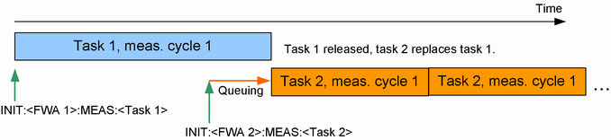
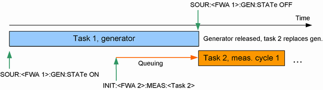
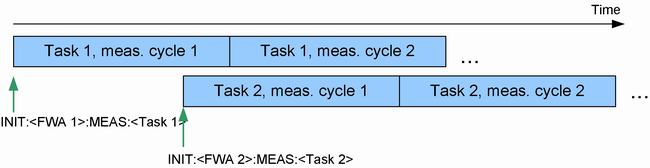

The principles of R&S CMW resource and path management can be summarized briefly:
- Non-conflicting tasks can run in parallel without restriction.
- A new task that is in conflict with a running task replaces the running task.Exceptions:
– Measurements can only replace measurements, but not tasks of another type. Instead, the new measurement is queued until the running task is ended by other means.
See also "Queuing of Measurements". - Measurements are released after the current measurement cycle. Other applications are released immediately.
The RPM principles can be visualized as follows:


Signaling applications behave like generators and must be turned off explicitly.

If the instrument is split into several subinstruments, each of them is equipped with independent hardware and software resources to run the tasks assigned to it. The RPM principles apply to each subinstrument separately. This separation does not apply to software license keys. Example: To run two instances of a measurement in parallel, requires two license keys. If only one license key is active, the RPM mechanisms apply even if the two instances of the measurement are run on different subinstruments. |